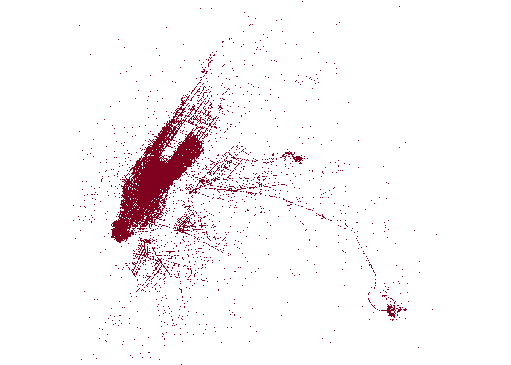
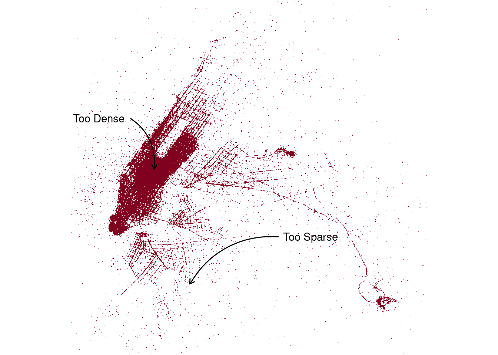
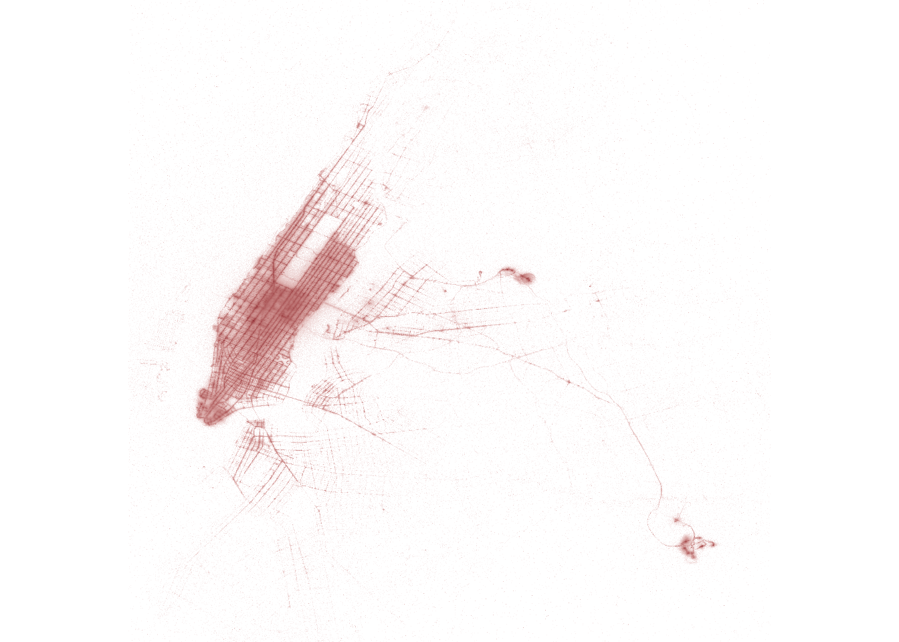
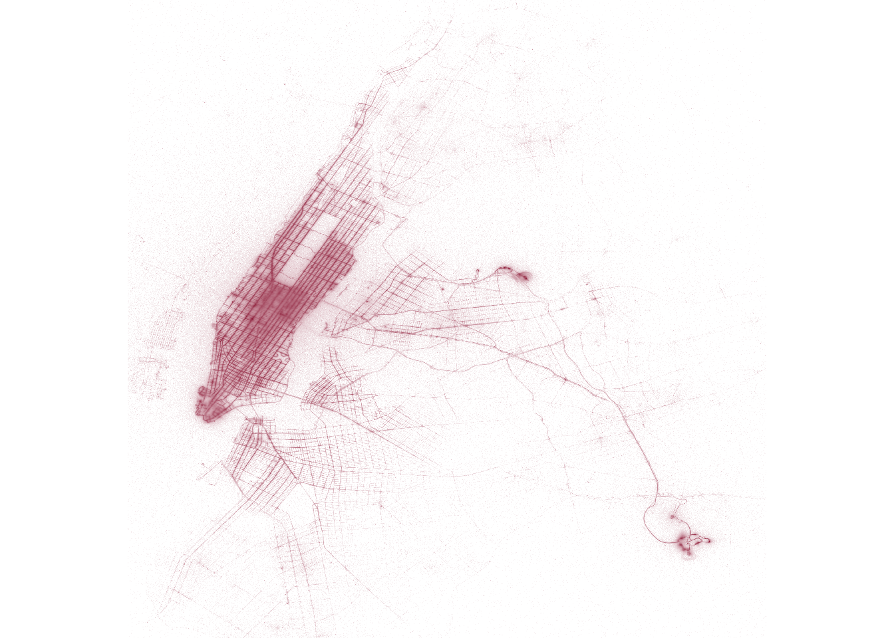
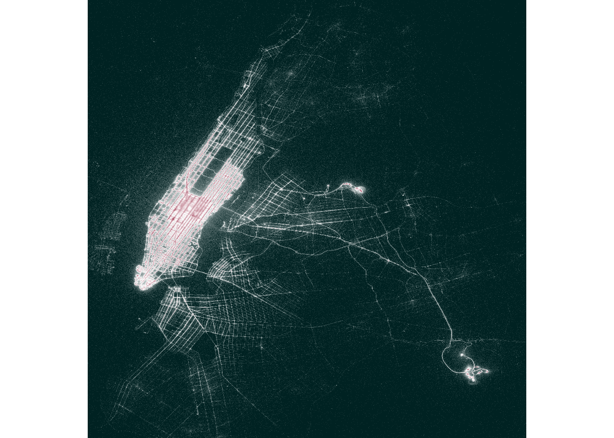

![]()
library(arrow)
library(dplyr)
library(tictoc)
library(tidyr)
library(ggplot2)It’s been a couple of months since I published anything on this blog. In my defence, I’ve been busy: I spent the month of June developing a workshop and website on larger than memory workflows in R with Apache Arrow for the useR! conference, and I spent July doing the same thing for my art from code workshop at rstudio::conf. But I am back to blogging now and I’m going to ease myself into it with a post that mixes some ideas from both of those workshops: how to use Arrow to assist in visualising large data sets. Specifically, I’m going to construct a map showing the geographic distribution of pickup locations for a billion or so taxi rides in New York.1
The NYC taxi data
At this point in my life I have used the “NYC Taxi Data” for so many illustrative examples I feel like I don’t need to explain it: doesn’t “everyone” know about this data by now? Yeah, no dice sweetie. That’s a terrible intuition. Most people don’t know the data, and those that do can just skip to the next section! :-)
Here’s a quick summary of the data set. In its full form, the data set takes the form of one very large table with about 1.7 billion rows and 24 columns. Each row corresponds to a single taxi ride sometime between 2009 and 2022. There’s a complete data dictionary for the NYC taxi data on the useR workshop site, but the columns that will be relevant for us are as follows:
pickup_longitude(double): Longitude data for the pickup locationpickup_latitude(double): Latitude data for the pickup locationdropoff_longitude(double): Longitude data for the dropoff locationdropoff_latitude(double): Latitude data for the dropoff location
On my laptop I have a copy of both the full data set, located at "~/Datasets/nyc-taxi" on my machine, and a much smaller “tiny” data set that contains 1 out of every 1000 records from the original, located at "~/Datasets/nyc-taxi-tiny/". This tiny version has a mere 1.7 million rows of data, and as such is small enough that it will fit in memory. Instructions for downloading both data sets are available at the same location as the data dictionary.
Loading the data
Since I have local copies of the data, I’ll use the open_dataset() function from the {arrow} package to connect to both versions of the NYC taxi data:2
nyc_taxi <- open_dataset("~/Datasets/nyc-taxi/")
nyc_taxi_tiny <- open_dataset("~/Datasets/nyc-taxi-tiny/")Starting with Arrow 9.0.0 it’s been possible to use the {dplyr} glimpse() function to take a look at the data sets, so let’s do that:
glimpse(nyc_taxi)FileSystemDataset with 158 Parquet files
1,672,590,319 rows x 24 columns
$ vendor_name <string> "VTS", "VTS", "VTS", "DDS", "DDS", "DDS", "DD…
$ pickup_datetime <timestamp[ms]> 2009-01-04 13:52:00, 2009-01-04 14:31:00, 200…
$ dropoff_datetime <timestamp[ms]> 2009-01-04 14:02:00, 2009-01-04 14:38:00, 200…
$ passenger_count <int64> 1, 3, 5, 1, 1, 2, 1, 1, 1, 1, 1, 1, 2, 2, 1, …
$ trip_distance <double> 2.63, 4.55, 10.35, 5.00, 0.40, 1.20, 0.40, 1.…
$ pickup_longitude <double> -73.99196, -73.98210, -74.00259, -73.97427, -…
$ pickup_latitude <double> 40.72157, 40.73629, 40.73975, 40.79095, 40.71…
$ rate_code <string> NA, NA, NA, NA, NA, NA, NA, NA, NA, NA, NA, N…
$ store_and_fwd <string> NA, NA, NA, NA, NA, NA, NA, NA, NA, NA, NA, N…
$ dropoff_longitude <double> -73.99380, -73.95585, -73.86998, -73.99656, -…
$ dropoff_latitude <double> 40.69592, 40.76803, 40.77023, 40.73185, 40.72…
$ payment_type <string> "Cash", "Credit card", "Credit card", "Credit…
$ fare_amount <double> 8.9, 12.1, 23.7, 14.9, 3.7, 6.1, 5.7, 6.1, 8.…
$ extra <double> 0.5, 0.5, 0.0, 0.5, 0.0, 0.5, 0.0, 0.5, 0.0, …
$ mta_tax <double> NA, NA, NA, NA, NA, NA, NA, NA, NA, NA, NA, N…
$ tip_amount <double> 0.00, 2.00, 4.74, 3.05, 0.00, 0.00, 1.00, 0.0…
$ tolls_amount <double> 0, 0, 0, 0, 0, 0, 0, 0, 0, 0, 0, 0, 0, 0, 0, …
$ total_amount <double> 9.40, 14.60, 28.44, 18.45, 3.70, 6.60, 6.70, …
$ improvement_surcharge <double> NA, NA, NA, NA, NA, NA, NA, NA, NA, NA, NA, N…
$ congestion_surcharge <double> NA, NA, NA, NA, NA, NA, NA, NA, NA, NA, NA, N…
$ pickup_location_id <int64> NA, NA, NA, NA, NA, NA, NA, NA, NA, NA, NA, N…
$ dropoff_location_id <int64> NA, NA, NA, NA, NA, NA, NA, NA, NA, NA, NA, N…
$ year <int32> 2009, 2009, 2009, 2009, 2009, 2009, 2009, 200…
$ month <int32> 1, 1, 1, 1, 1, 1, 1, 1, 1, 1, 1, 1, 1, 1, 1, …If you’ve used glimpse() before this output will look very familiar. Each line in the output show the name of one column in the data, followed by the first few entries in that column.3 However, when you look at the size of the data set, you might begin to suspect that some magic is going on. Behind the scenes there are 1.7 billion rows of data in one huge table, and this is just too big to load into memory. Fortunately, the {arrow} package allows us to work with it anyway!
Plotting a million rows
Okay, let’s start with a data visualisation problem that wouldn’t be too difficult to manage on a small data set. I want to draw an image that plots the pickup location for every taxi ride in the data set. Here’s how I might go about that. First, I’ll do a minimal amount of data wrangling in {arrow}. Specifically, I’ll use the {dplyr} select() and filter() functions to limit the amount of data I have to collect() into R:
tic()
nyc_pickups <- nyc_taxi_tiny |>
select(pickup_longitude, pickup_latitude) |>
filter(
!is.na(pickup_longitude),
!is.na(pickup_latitude)
) |>
collect()
toc()0.16 sec elapsedAt this point I have a regular R data frame, nyc_pickups, that contains only the data I need: the pickup locations for all those taxi rides (in the tiny taxi data set) that actually contain longitude and latitude data. Let’s use glimpse() again:
glimpse(nyc_pickups)Rows: 1,249,107
Columns: 2
$ pickup_longitude <dbl> -73.95557, -73.97467, -73.78190, -73.97872, -73.97400…
$ pickup_latitude <dbl> 40.76416, 40.76222, 40.64478, 40.75371, 40.77901, 0.0…Compared to the full NYC taxi data, this is a relatively small data set. Drawing a scatter plot from 1.2 million observations isn’t a trivial task, to be sure, but it is achievable. In fact the {ggplot2} package handles this task surprisingly well:
x0 <- -74.05 # minimum longitude to plot
y0 <- 40.6 # minimum latitude to plot
span <- 0.3 # size of the lat/long window to plot
tic()
pic <- ggplot(nyc_pickups) +
geom_point(
aes(pickup_longitude, pickup_latitude),
size = .2,
stroke = 0,
colour = "#800020"
) +
scale_x_continuous(expand = c(0, 0)) +
scale_y_continuous(expand = c(0, 0)) +
theme_void() +
coord_equal(
xlim = x0 + c(0, span),
ylim = y0 + c(0, span)
)
pic
toc()3.365 sec elapsedIt’s not lightning fast or anything, but it’s still pretty quick!
As neat as this visualisation is there are limitations.4 In some parts of the plot – notably midtown in Manhattan – the data are so dense that you can’t make out any fine detail. In other parts – Brooklyn and Queens, for instance – there are so few data points that you can’t see much at all:

How do we improve this image?
Scaling to a billion rows
To make a better version of this plot, we’re going to have to do two things at once:
- Use a lot more data. If we use the full NYC taxi data set, the visualisation will be a lot more detailed in areas where it is currently too sparse.
- Show gradation at each location. In the dense areas there are too many points plotted atop one another. Instead of overplotting, we’ll use shading to represent the number of pickups at each location.
How do we do this? Let’s say I want to create a 4000 x 4000 pixel image, and I want the “intensity” at each pixel to represent the number of pickups that fall in the geographic region spanned by that pixel. There are a total of 16 million pixels, so our task is to assign each of observation one of those those 16 million bins, and then count the number of observations in each bin. We’ll have to rely on Arrow to do all the heavy lifting here. This binning cannot be done natively in R: the data set is just too big. Even after filtering out missing and out-of-bounds data points, there are still 1.2 billion rows, and R can’t do that without assistance.
Here’s what the solution looks like:
tic()
pixels <- 4000
pickup <- nyc_taxi |>
filter(
!is.na(pickup_longitude),
!is.na(pickup_latitude),
pickup_longitude > x0,
pickup_longitude < x0 + span,
pickup_latitude > y0,
pickup_latitude < y0 + span
) |>
mutate(
unit_scaled_x = (pickup_longitude - x0) / span,
unit_scaled_y = (pickup_latitude - y0) / span,
x = as.integer(round(pixels * unit_scaled_x)),
y = as.integer(round(pixels * unit_scaled_y))
) |>
count(x, y, name = "pickup") |>
collect()
toc()31.101 sec elapsedMy laptop solves this binning problem in about 30 seconds. As before, I’ll use glimpse() to take a peek at the results:
glimpse(pickup)Rows: 4,677,864
Columns: 3
$ x <int> 1058, 1024, 1162, 3525, 865, 794, 856, 705, 647, 762, 802, 1207…
$ y <int> 2189, 2040, 2265, 552, 1983, 1646, 2018, 1590, 1723, 2010, 1645…
$ pickup <int> 6514, 5030, 3818, 67, 2408, 2415, 932, 3607, 2664, 1024, 2207, …This is a data frame where x and y specify the pixel, and and a pickup counts the number of pickups associated with that pixel. Note that the pixels aren’t arranged in a meaningful order, and only those pixels with at least one pickup (a little under 30% of all pixels) are included in data.
We can visualise this in a number of ways. One possibility is to create a scatter plot, using the pickup value to specify the shading of each plot marker:
tic()
ggplot(pickup) +
geom_point(
aes(x, y, colour = log10(pickup)),
size = .01,
stroke = 0,
show.legend = FALSE
) +
scale_colour_gradient(low = "white", high = "#800020") +
scale_x_continuous(expand = c(0, 0)) +
scale_y_continuous(expand = c(0, 0)) +
theme_void() +
coord_equal()
toc()12.159 sec elapsedAs you can see, {ggplot2} has no problems drawing a scatter plot from a few million observations, and it’s an improvement on our first attempt. However, we can do better. Instead of trying to draw a scatter plot of all the points listed in the pickup data frame, let’s use it to populate a bitmap. We’ll create a 4000x4000 matrix, and fill in the cells with the pickup counts at the corresponding pixel.
The computation is a two part process. First, we use expand_grid() to initialise a “grid like” tibble containing all combination of x and y values, and use left_join() to populate a column containing the pickup counts:
tic()
grid <- expand_grid(x = 1:pixels, y = 1:pixels) |>
left_join(pickup, by = c("x", "y")) |>
mutate(pickup = replace_na(pickup, 0))
toc()8.228 sec elapsedNote that the elements of grid are complete (all 16 million pixels are there), and meaningfully ordered. We can check this by calling glimpse() again:
glimpse(grid)Rows: 16,000,000
Columns: 3
$ x <int> 1, 1, 1, 1, 1, 1, 1, 1, 1, 1, 1, 1, 1, 1, 1, 1, 1, 1, 1, 1, 1, …
$ y <int> 1, 2, 3, 4, 5, 6, 7, 8, 9, 10, 11, 12, 13, 14, 15, 16, 17, 18, …
$ pickup <int> 0, 0, 0, 0, 0, 0, 0, 0, 0, 0, 0, 0, 0, 0, 0, 0, 0, 0, 0, 0, 0, …Because the elements of grid$pickup are arranged in this fashion, it is easy to construct the required 4000x4000 matrix:
tic()
pickup_grid <- matrix(
data = grid$pickup,
nrow = pixels,
ncol = pixels
)
toc()0.02 sec elapsedThis is our bitmap. It’s a matrix whose values correspond to the pixel intensities to be plotted. Just so you can see what it looks like, here’s a tiny 10x10 pixel section from that matrix:
pickup_grid[2000:2009, 2000:2009] [,1] [,2] [,3] [,4] [,5] [,6] [,7] [,8] [,9] [,10]
[1,] 11 2 2 4 6 3 7 15 54 96
[2,] 5 3 3 1 5 27 47 55 74 100
[3,] 5 6 7 38 39 48 60 99 95 75
[4,] 16 37 51 45 35 61 64 67 51 18
[5,] 67 50 97 141 55 24 26 26 40 29
[6,] 65 133 56 18 11 10 659 6 4 9
[7,] 35 78 13 3 82 105 68 2 2 4
[8,] 7 7 4 3 7 25 4 2 2 3
[9,] 8 10 3 3 17 5 98 2 4 3
[10,] 8 6 8 2 19 6 1 2 3 23Now that the data are in an image-like format, all we have to do is write the image file. We don’t even need {ggplot2}: we can use image() to draw the bitmap directly. Here’s a little helper function I wrote to do this:
render_image <- function(mat, cols = c("white", "#800020")) {
op <- par(mar = c(0, 0, 0, 0))
shades <- colorRampPalette(cols)
image(
z = log10(t(mat + 1)),
axes = FALSE,
asp = 1,
col = shades(256),
useRaster = TRUE
)
par(op)
}Here’s what happens when I call it:
tic()
render_image(pickup_grid)
toc()2.149 sec elapsedThis method is slightly faster the previous version, but the real advantage isn’t speed – it’s clarity. There’s less blurring in the denser parts of the plot (midtown Manhattan), and there’s also more clarity in the sparser areas (e.g., the Brooklyn streets are sharper).
We can push it slightly further by tweaking the colour palette. Plotting the logarithm of the number of pickups ensures that all the streets are visible (not just the extremely common ones), but it does have the downside that it’s hard to tell the difference between moderately popular pickup locations and extremely popular ones. A well-chosen diverging palette helps rectify this a little:
render_image(pickup_grid, cols = c("#002222", "white", "#800020"))
At long last we have a visualisation that shows all the billion rows of data, crisply delineates all the streets on which taxi pickups are at least moderately frequent, and does a reasonable job of highlighting those locations where taxi pickups are extremely common. Yay! 🎉
Lessons learned?
To wrap this post up, I think it’s useful to reflect on the process I went through in constructing this image. In one sense, the process I’ve gone through here isn’t actually much different to what we do when creating any other data visualisation in R. For example, if you’re working in {tidyverse}, a typical work flow is to use {dplyr} to wrangle the data into an appropriate format and then use {ggplot2} to plot the data. What I’ve done here isn’t that different: okay yes, my {dplyr} code only works because it’s backed by the {arrow} engine, and in the end I decided to use base graphics rather than {ggplot2} to draw the final image, but I don’t think those differences constitute a major departure from my usual approach.
That being said, I think there are two key principles I’ve taken away from this. When trying to visualise very large data sets in R, the things I’m going to try to keep in mind are:
Push as much of the computational work onto {arrow} as possible. The {arrow} package is designed specifically to handle these kinds of data manipulation problems, and things go much more smoothly when I don’t make {ggplot2} do the computational heavy lifting.
Think carefully about the data representation. The reason why the final plot drawn with
image()is nicer than the earlier ones drawn with {ggplot2} has nothing at all to do with the “base R vs tidyverse” issue. Instead, it’s because the data structure I created (i.e.,pickup_grid) is the exact bitmap that needed to be rendered, and that’s exactly whatimage()is good for.
Acknowledgments
Thank you to Kae Suarez, Keith Britt, and François Michonneau for reviewing this post.
Footnotes
This post is adapted from the NYC taxi scatter GitHub repository that I put together to chat about on The Data Thread live interviews series, Pulling the Thread↩︎
It’s worth noting that you can connect to remote data sets as well as local ones, but that’s a bit beyond the scope of this post.↩︎
There are a few small hints that the underlying data structure is different though. For instance, the data types associated with each column refer to Arrow data types (e.g., timestamp, int32, int64, etc) rather than R data types. I’m not going to talk about those here, but if you’re looking for information about this topic, there’s a short summary of Arrow data types on the workshop website, and a longer blog post on Arrow data types on this blog.↩︎
I’m not talking about the fact that there’s no legend or explanatory text: although those are real failures of data visualisation, they’re easily fixable. {ggplot2} has lots of tools for annotating plots appropriately.↩︎
Reuse
Citation
BibTeX citation:
@online{navarro2022,
author = {Navarro, Danielle},
title = {How to Visualise a Billion Rows of Data in {R} with {Apache}
{Arrow}},
date = {2022-08-23},
url = {https://blog.djnavarro.net/posts/2022-08-23_visualising-a-billion-rows},
langid = {en}
}
For attribution, please cite this work as: